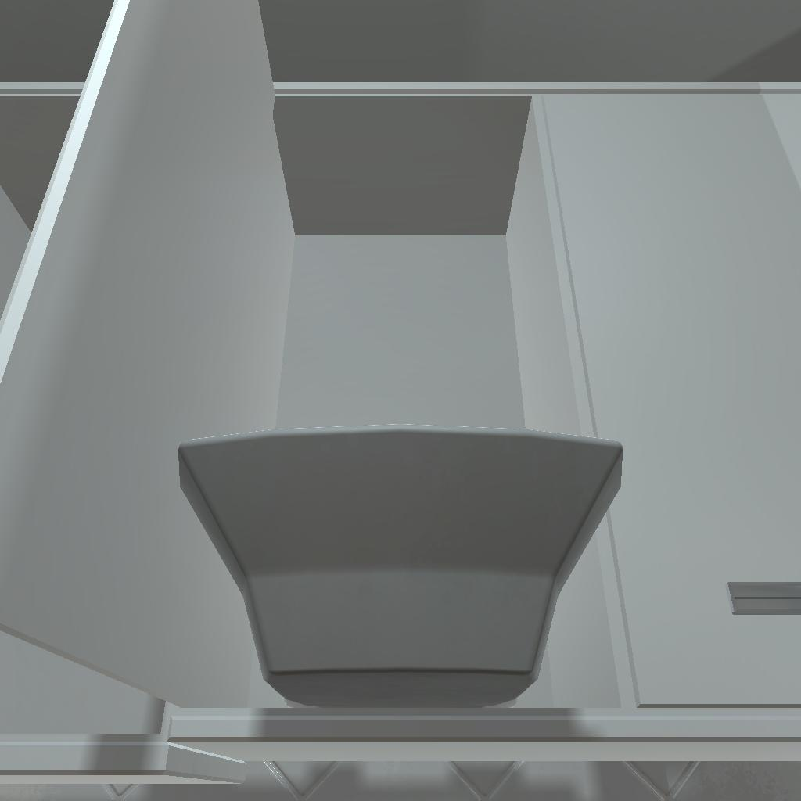

---------------------------------------------------------task: 21---------------------------------------------------------
--------------------------------------------------------------------------------------------------------------------------------------------------------------------
--------------------------------------------------------------------------------------------------------------------------------------------------------------------
Step:--------------------------------------------------------------------------19-------------------------------------------------------------------------------
----------------------------------------
VLM Prompt:
**Task**
Please perform as an embodied AI agent. Our final objective is to heat some cup and put it in countertop. Below is the plan for completing the task, the current observation, alongside historical data and admissible actions for the next step. Please determine the best action for the next step!
**Plan**
Below is a detailed step-by-step plan to complete the task.
1. Find a cup.
2. Pick up the cup.
3. Find a microwave.
4. Heat the cup with the microwave.
5. Find a countertop.
6. Place the heated cup on the countertop.
**Current Observation**
Displayed is an image capturing the current position of the agent.
Objects in The Image: ['Vent hood', 'Cabinet', 'Handle']
**History Information**
Displayed are the previous observations with their corresponding actions.
State 0:
No history.
State 1:
1. Step Index in the Plan: 1
2. Objects: Kitchen Sink, Fork, Spoon, Faucet, Window, Trash Can, Countertop, Cabinet, Tiles
3. Action: go to cabinet 1
State 2:
2. Step Index in the Plan: 1
3. Objects: Cabinet, Cabinet Handles
4. Action: open cabinet 1
State 3:
1. Step Index in the Plan: Unknown (Current task is "Find a cup.")
2. Objects: Cabinet 1, Plate (inside cabinet)
3. Action: go to cabinet 2
State 4:
1. Step Index in the Plan: 1
2. Objects: Cabinet, Shelf, Plate
3. Action: open cabinet 2
State 5:
2. Step Index in the Plan: 1
3. Objects: Cabinets, Plate
4. Action: go to cabinet 3
State 6:
1. Step Index in the Plan: 1
2. Objects: Cabinet 3, Shelf, Plate
3. Action: go to cabinet 4
State 7:
1. Step Index in the Plan: Unknown
2. Objects: Kitchen Cabinet, Cabinet Handle
3. Action: open cabinet 4
State 8:
1. Step Index in the Plan: Unknown (specific step to find a cup)
2. Objects: Salt Shaker, Tiled Backsplash, Kitchen Cabinet, Countertop
3. Action: go to cabinet 5
State 9:
1. Step Index in the Plan: 1
2. Objects: Salt Shaker, Kitchen Counter, Tile Backsplash, Cabinet
3. Action: open cabinet 5
State 10:
1. Step Index in the Plan: Unknown
2. Objects: Salt Shaker, Cabinet 5, Cabinet Handle, Countertop, Tile Backsplash
3. Action: go to cabinet 6
State 11:
1. Step Index in the Plan: Unknown (aim is to find a cup)
2. Objects: Refrigerator, Cabinets, Ceiling, Handles
3. Action: open cabinet 6
State 12:
1. Step Index in the Plan: 1
2. Objects: Cabinet, Handle, Shelf, Ceiling, Wall
3. Action: close cabinet 6
State 13:
1. Step Index in the Plan: 1
2. Objects: Kitchen Cabinets, Cabinet Handles, Ceiling
3. Action: go to cabinet 4
State 14:
1. Step Index in the Plan: 1
2. Objects: Refrigerator, Cabinet, Ceiling, Handle
3. Action: go to microwave 1
State 15:
1. Step Index in the Plan: 1
2. Objects: Cabinet, Handle, Shelf, Ceiling, Lighting (no cup visible)
3. Action: open microwave 1
State 16:
1. Step Index in the Plan: Ongoing since State 1
2. Objects: Microwave, Plate
3. Action: go to cabinet 3
State 17:
1. Step Index in the Plan: Unknown
2. Objects: Cabinet 3 (contains a plate), other cabinets (1, 2, 4, 5, 6), microwave
3. Action: open cabinet 3
State 18:
1. Step Index in the Plan: Ongoing since State 1
2. Objects: Refrigerator Door, Shelves, Plate, Frying Pan
3. Action: close cabinet 3
State 19:
1. Step Index in the Plan: 1
2. Objects: Cabinet, Shelf, Plate, Bowl (in cabinet 3)
3. Action: take bowl 1 from cabinet 3
**Admissible Actions**
(1): go to cabinet 1
(2): go to cabinet 2
(3): go to microwave 1
(4): go to cabinet 4
(5): go to cabinet 5
(6): go to cabinet 6
(7): go to countertop 1
(8): go to coffeemachine 1
(9): go to toaster 1
(10): go to countertop 2
(11): go to sink 1
(12): go to sinkbasin 1
(13): go to fridge 1
(14): put bowl 1 in/on cabinet 3
(15): examine bowl 1
**Analysis Guideline**
1. Analyze the history and current observation, and then determine our current step in the plan and our current place.
2. List all visible objects related to the task in the current observation, without summarizing any as "various items."
3. Analyze the objects in the current observation based on the history and the requirements for the current step, and then determine if we can complete the step with the current observation.
4. Analyze and decide on the most appropriate action to take.
5. Summarize the analysis using the following format: "Analysis: [The summarization of the analysis], The Most Appropriate Action: (i which is the integer.): [Selected action]"
**Notes**
1. We must complete each step of the plan in order and cannot skip steps when the previous ones are not finished.
2. For "Go to" actions listed as "go to xxx [n]", interpret this as there are n distinct actions available: "go to xxx 1", "go to xxx 2", ..., "go to xxx n". Select one specific action from these options instead of using "go to xxx [n]".
3. If receptacles such as drawers, cabinets, and so forth are closed in the current observation, we may try to open them.
4. Pay attention to synonyms and ensure clarity in the terms used.
5. We must determine and provide the single action which must be in the **Admissible Actions**.
6. If there is no history available, we are at the first step and the current place is "Unknown".
**Answer**
Please select the most suitable action by following the **Analysis Guideline**, keeping the above **Notes** in mind.
----------------------------------------
----------------------------------------
VLM Response:
Analysis: The current step in the plan is to find a cup, which has been ongoing since State 1. The current observation shows the agent facing what appears to be the underside of a vent hood with a cabinet in view. The objects in the image are a 'Vent hood', 'Cabinet', and 'Handle'. There is no cup visible in the current observation, so we cannot complete the current step with what we see now. Based on the history, cabinet 3 was the last one to have a bowl taken from it, and the previous actions included opening various cabinets and a microwave in search of a cup. Since the 'Cabinet' in the current observation has not been specified in the history as one that has already been checked and opened, examining this cabinet might be the most appropriate next action.
However, the admissible actions do not include an option to open the currently viewed cabinet; they only include "go to" actions for various locations and the option to put the bowl back or examine it. Since we have not successfully found a cup yet, examining the bowl taken from cabinet 3 (action 15) would not be productive for our current objective. Therefore, we should continue searching the cabinets.
We have actions available to go to various cabinets (1, 2, 4, 5, 6), but the history indicates that cabinets 1 through 6 have already been opened and did not contain a cup. Since there are no new cabinets listed in the admissible actions, and we cannot open the cabinet we're currently observing, the best course of action would be to revisit one of the previously opened cabinets in case the cup was missed during earlier searches.
The Most Appropriate Action: (4): go to cabinet 4
----------------------------------------
----------------------------------------
>>> Refine VLM Response and Get Pure Action: go to cabinet 4
----------------------------------------
-----------------------------------------------------------------
Running time: 41.779433727264404 seconds
Total Money: 0
-----------------------------------------------------------------
-----------------------------------------------------------------
Summarization Prompt:
**Context**
Analysis: Since there is no history information, we are at the first step in the plan, which is to find a statue. The current place is unknown. In the current observation, we see a floorlamp next to an armchair with a small table that has a small object on it, which could potentially be the statue we are looking for. Since the plan requires us to find a statue first and it appears there might be one on the table next to the armchair, we should investigate this object to determine if it is the statue we need.
The Most Appropriate Action: (1): go to armchair 1
**Summary**
1. Step Index in the Plan: 1
2. Objects: Floorlamp, Armchair, Small Table, Small Object (potential statue)
3. Action: go to armchair 1
**Context**
Analysis: The current step in the plan is to find a cup, which has been ongoing since State 1. The current observation shows the agent facing what appears to be the underside of a vent hood with a cabinet in view. The objects in the image are a 'Vent hood', 'Cabinet', and 'Handle'. There is no cup visible in the current observation, so we cannot complete the current step with what we see now. Based on the history, cabinet 3 was the last one to have a bowl taken from it, and the previous actions included opening various cabinets and a microwave in search of a cup. Since the 'Cabinet' in the current observation has not been specified in the history as one that has already been checked and opened, examining this cabinet might be the most appropriate next action.
However, the admissible actions do not include an option to open the currently viewed cabinet; they only include "go to" actions for various locations and the option to put the bowl back or examine it. Since we have not successfully found a cup yet, examining the bowl taken from cabinet 3 (action 15) would not be productive for our current objective. Therefore, we should continue searching the cabinets.
We have actions available to go to various cabinets (1, 2, 4, 5, 6), but the history indicates that cabinets 1 through 6 have already been opened and did not contain a cup. Since there are no new cabinets listed in the admissible actions, and we cannot open the cabinet we're currently observing, the best course of action would be to revisit one of the previously opened cabinets in case the cup was missed during earlier searches.
The Most Appropriate Action: (4): go to cabinet 4
Please summarize the context by following above examples when providing the summary, and ensure that only the summary is included, without any extra explanation.
**Summary**
-----------------------------------------------------------------
-----------------------------------------------------------------
Summarization Response:
1. Step Index in the Plan: Ongoing since State 1
2. Objects: Vent Hood, Cabinet, Handle
3. Action: go to cabinet 4
-----------------------------------------------------------------
-----------------------------------------------------------------
Text Observation:You arrive at loc 4. The cabinet 4 is open. On the cabinet 4, you see a saltshaker 1.
-----------------------------------------------------------------
UNSUCCEED